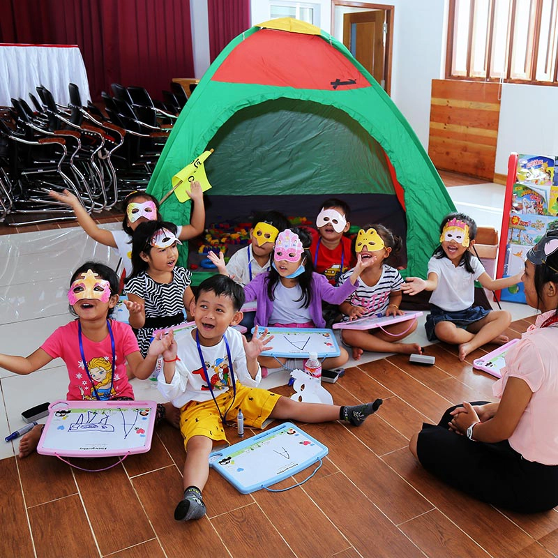

What makes our private
international school special?
At American Intercon School, we constantly support our students to
achieve their learning beyond their expectations through this private
international school`s shared commitment to link their self-study with
tremendous opportunities. With high-quality international teaching and
partnering with the world’s leading international education
institutions, your children will be successful with great development
and pleasure in learning in our private international school.
American Intercon School